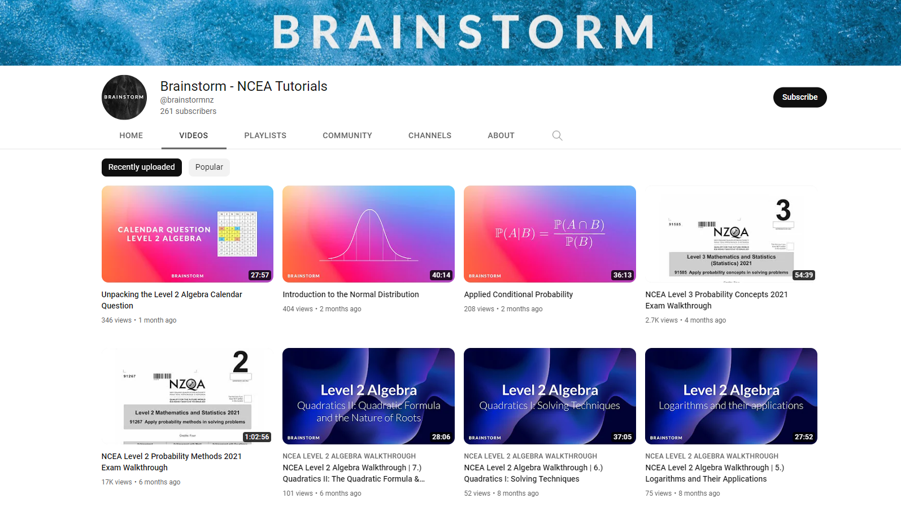
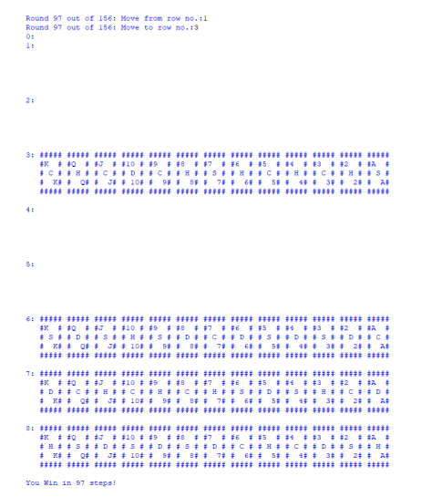

Kia Ora,
|
 |
Great ideas have great effects.
In today's world, change is rapid. The evolution of technology. The discovery of a new drug. Now, more than ever, when we look at the world around us, we are greeted by great ideas in their ultimate form.
Most people would agree (in both a literal and metaphorical sense) that today's young people are the answer to tomorrow. But I don't believe that the education sector has evolved at the same rate that today's world has. That is to say, if we want our young people to leave a tangible, beneficial impact on future generations, then they need to develop the ability to:
- Recognise and discover their strengths
- Challenge deep and complex issues
- Think up incredible yet rational solutions
I believe we're still very much at the beginning of this journey - a journey I feel strongly inclined to be a part of.
I aspire to use my knowledge of STEM to help young people learn differently. A way of learning that is more engaging than reading a textbook. A way of thinking that is more than rote memorisation. A method of teaching that plants great ideas with great effects.
I am currently completing my undergraduate degree at The University of Auckland. I am studying my third year of a Bachelor of Science, majoring in Computer Science and Statistics.
I am scheduled to graduate in July of 2023, and am looking to begin graduate study in Secondary teaching at the beginning of 2024.
Technical Skills
 |
 |
 |
 |
 |
 |
 |
| PYTHON | JAVA | C# | R | HTML 5 | CSS 3 | JAVASCRIPT |
Projects
|  |  |
 |
| Brainstorm New Zealand
A YouTube channel I run in order to develop my ability to teach and lecture. Content heavily focuses on NCEA Mathematics and Digital Technologies. |
The Game Academy
A clone of chess.com. Both front-end and back-end were coded by myself as required by the brief. The purpose of this project was to demonstrate how APIs connect both the front and back end together. |
Java-based Shape Bouncing
A basic GUI based on the Java platform. The purpose of this project was to demonstrate an understanding of OOP as well as implementing event handlers. |
|  |  |
|
| Command Line Solitaire
A basic Python based solitaire. The purpose of this program was to demonstrate mastery over the basics of Python 3. |
Young Life New Zealand Trust
A mock website I created as a scholarship project in my ultimate year of High School. |